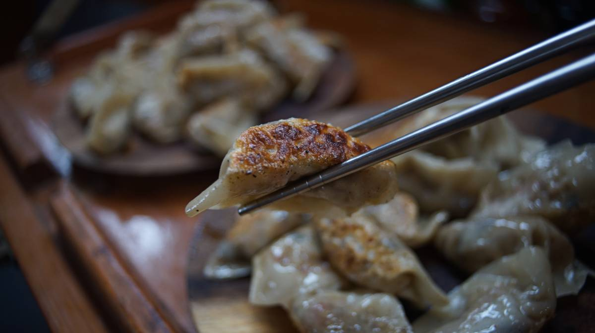
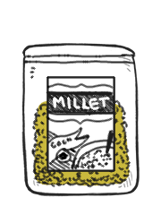
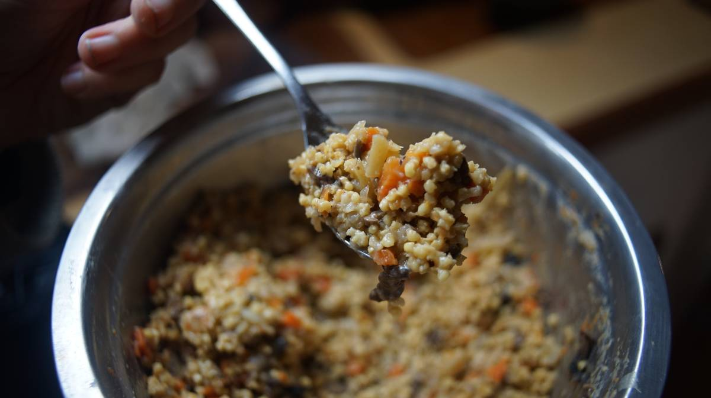
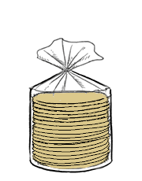
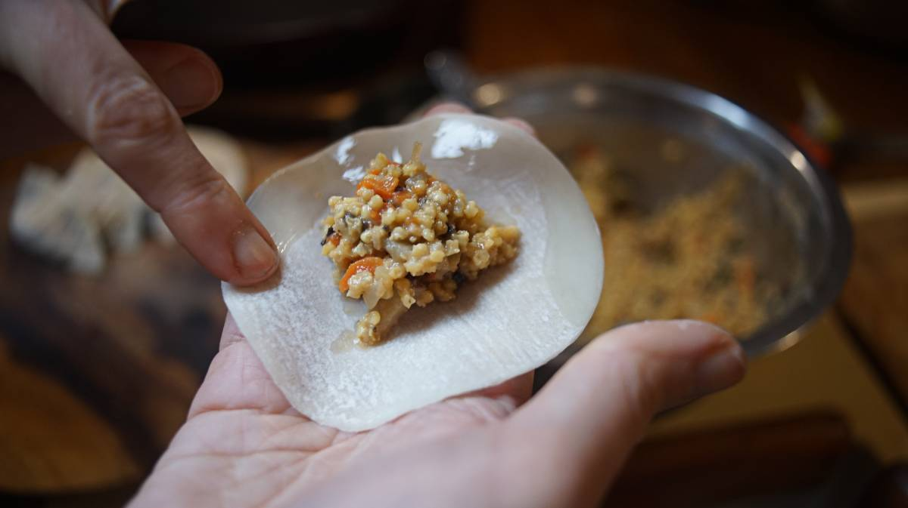
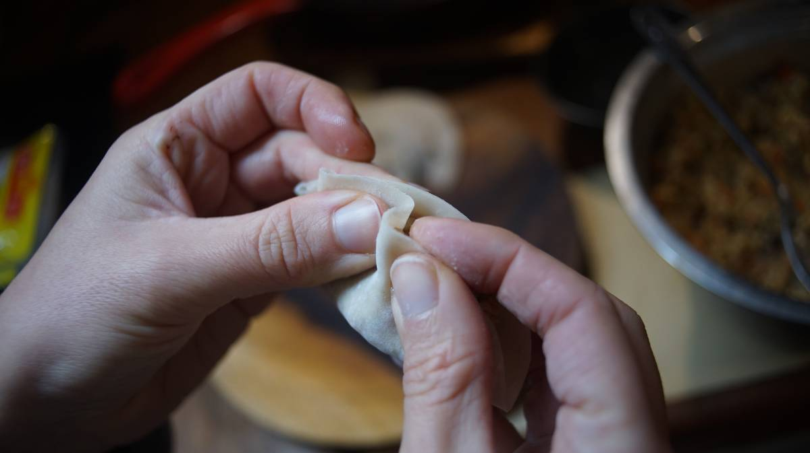
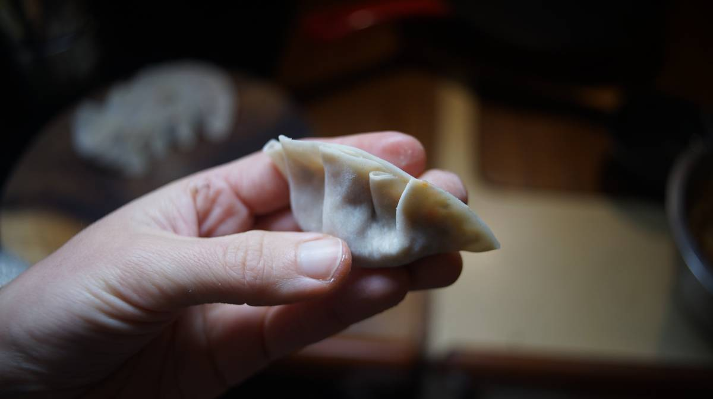
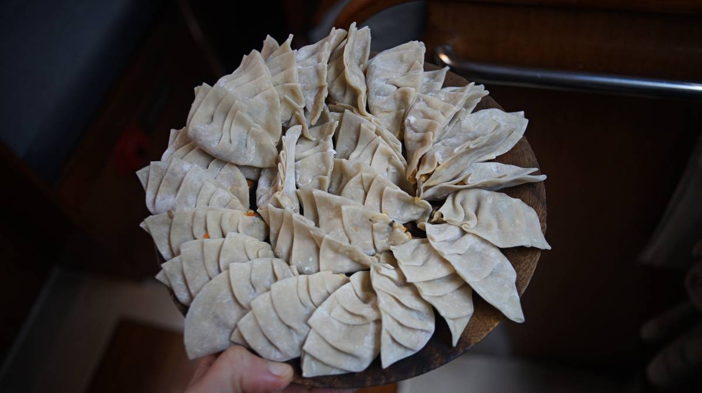
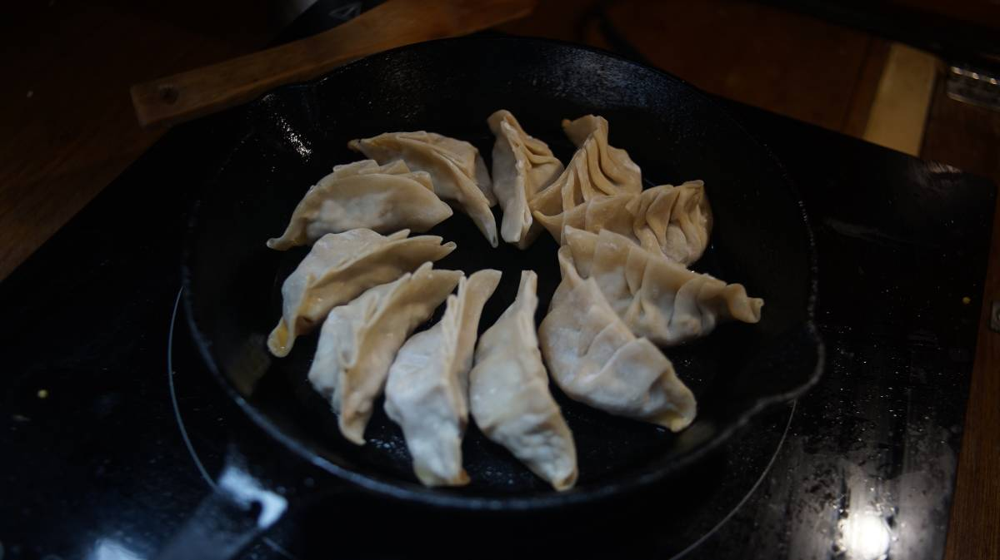

Millet dumplings
72 dumplings — 120 minutes
When we visit our parents out east during the holiday season, we like to prepare millet tourtières(millet pot pies). It is a recipe we like but that we can't prepare aboard Pino because we don't have a working oven (no way to bake the tourtière). This year, we got the idea of making Japanese-style dumplings(gyoza) but with the pot pie filling we use for tourtière. We can prepare this meal on the stovetop and it tastes amazing!
For this recipe we used pre-made dumpling wrappers, but it's possible to make the wrappers yourself: see our gyoza wrappers recipe.
The tourtière filling was based on a recipe by Jean-Philippe. A tourtière recipe that we love and make every year.
Cutting food small. An important note for this recipe is that all vegetables need to be cut very small so they fit inside a wrapper, if cut too big you'll end up with a bunch of lumpy dumplings, or dumplings that won't close. We minced the potatoes, carrots and onions for this reason (it also means they cook down faster!).
Dipping sauce. Typically, in Quebec, millet tourtière is served with ketchup, but we decided to make a traditional gyoza dip instead and added a hint of tomato.
Millet. Note that I used hulled millet in this recipe, toasting the grains before boiling then enhances their flavor and makes for better texture. Millet requires a water to grain ratio of 2:1. In this recipe the millet is cooked with less liquid because it will absorb more when it is cooked again in later steps.
 olive oil10 ml
olive oil10 ml- millet190 g, hulled variety
 vegetable bouillon375 ml
vegetable bouillon375 ml soy milk125 ml
soy milk125 ml potatoes3 medium, minced
potatoes3 medium, minced carrots2, minced
carrots2, minced yellow onion2 small, minced
yellow onion2 small, minced crimini115 g, minced
crimini115 g, minced soy sauce45 ml
soy sauce45 ml tomato paste15 g
tomato paste15 g garlic3 cloves, minced
garlic3 cloves, minced natural brown sugar15 g
natural brown sugar15 g cinnamon1.25 g
cinnamon1.25 g nutritional yeast20 g
nutritional yeast20 g- vegetable bouillon125 ml
filling
- Bring a pot to medium-high heat, when hot add 10 ml (2 tsp) of olive oil, along with 190 g (1 cup) of dry hulled millet. Toast the grains for 5 minutes while stirring (this enhances their flavor). Add 375 ml of vegetable broth(or water). When water begins to boil, cover pot with a lid, lower the heat and simmer for 25 minutes.
- Remove the pot from heat, let it rest with the lid on for an additional 10 minutes. Stir in 125 ml (1/2 cup) of unsweetened soy milk, put the lid back on and set aside for later.
- Cover the bottom of another pot with water, bring up to medium-high heat. When water is boiling, add the finely minced potatoes and the minced carrots. Cook for 5 minutes. Drain, and set aside for later.
- Heat a large skillet to medium-high heat, add a splash of olive oil and the 2 small minced yellow onions. Cook for 5 minutes, then add the potatoes, carrots and 115 g (2 cups) of minced crimini mushrooms and cook for another 10 minutes. If the mixture appears too dry, add a bit of water.
- Add 45 ml (3 tbsp) of soy sauce, 15 g (1 tbsp) of tomato paste, 3 cloves of minced garlic, 15 g (1 tbsp) of sugar(or maple syrup), 1.25 g (a pinch) of cinnamon and 125 ml (1/2 cup) of vegetable broth(or water). Mix well, cover with a lid, lower heat to low-medium and cook for 10 minutes.
- Remove the skillet from heat, add the cooked millet and season the mixture with salt and black pepper. Mix well. Let it cool completely, it is a good idea to prepare this in advance and to leave it to rest in a cool place for a few hours. Note that we made 72 dumplings with this filling, and we still had a bit left-over (not enough for another 36, though).

- dumpling wrapper72
 sesame oil60 ml, total
sesame oil60 ml, total water300 ml, total
water300 ml, total roasted sesame oil60 ml, total
roasted sesame oil60 ml, total
assembly
- Take 1 dumpling wrapper, wet all around the edge with water using your fingers (keep a bowl of water close to dip your fingers in).

- Put a spoonful of filling in the middle.
- Fold the dumpling wrapper lengthwise over the filling while pinching the center with the left thumb and forefinger, then start making a fold every half centimeter with the wrapper side(let's call it the front) that is closest to you, leaving the back part smooth. It is possible to pleat the left side first, and then to meet in the middle by pleating the right side afterward, but we like to pleat them all in the same direction.

 - Make sure it is pinched tight. Repeat for the rest of the dumpling wrappers. Cover with a damp towel while you work so they don't dry up. 
- Put 5 ml (1 tsp) sesame oil in a pan on medium heat. Using a pair of chopsticks, take a dumpling and dip the bottom(flat side) in the hot oil, moving it around, before setting it in the pan(this is to soak the bottoms in oil a bit so that they don't stick). Repeat for each dumpling until the pan is full. We can fit 11 dumplings at once (we cook our dumplings in a 19 cm/7 in cast-iron pan, you may not have to pre-dip, but we need to with our cookware, otherwise they stick), how much you can cook depends on the size of your pan. Cook until the bottom becomes golden, about 3 minutes.

- Add 50-60 ml (a bit less than 1/4 cup) of water and put a lid on. Let steam for 2-3 minutes or until all the water has evaporated.
- Remove cover, add 5 ml (1 tsp) of roasted sesame oil and cook for 2-3 minutes to crisp the bottoms up further. Transfer the cooked dumplings to a plate.
- Repeat for the rest of the dumplings.
 japanese rice vinegar45 ml
japanese rice vinegar45 ml- soy sauce45 ml
- tomato paste15 ml
- roasted sesame oil5 ml
 chili pepper flakes5 g
chili pepper flakes5 g
dipping
- Combine 45 ml (3 tbsp) of Japanese rice vinegar with 45 ml (3 tbsp) of soy sauce, 15 ml (1 tbsp) of tomato paste, 5 ml (1 tsp) of sesame oil and 5 g (1 tsp) of dried chili flakes. Mix well.